くび地蔵という
頭だけのお地蔵さんが神戸にありけり。
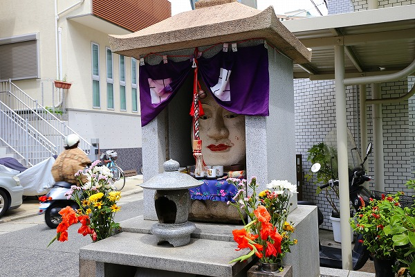
住宅街の一画にあるのだが、このインパクト！
唐突感が半端ない。
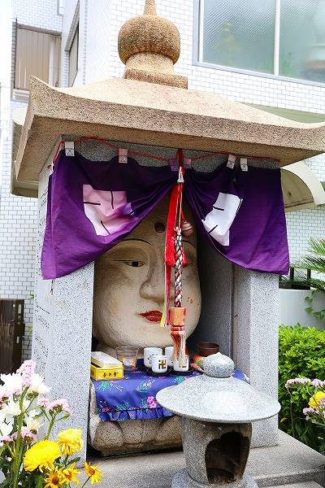
この地蔵さん、
花松くび地蔵という。
御顔がお堂の内側にピッチピチじゃないか！
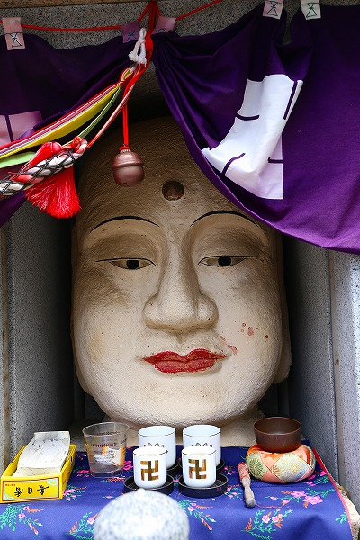
元々
花松地蔵という首から上に御利益があるお地蔵さんがこの地にあったそうな。
その後大正6年に地域の人の手によってこの
首だけ地蔵が建立されたのだという。
つまり最初から首だけのお地蔵さんなのだ。
ちなみに顔のサイズは60センチほど。
顔だけだと大きく見えるが、このサイズの御顔に胴体を付けても大仏基準法である1丈6尺（約4.8ｍ）の大きさにはならないだろうなー。
ところで元々あった花松地蔵は一体どこに行ってしまったのだろう？
傍らにある説明板には「すでにあった花松地蔵に納め『花松くび地蔵』と名付けられた。」と書かれている。
花松地蔵に納め、という文言の解釈には何通りか考えられる。
1；破損してしまった花松地蔵の代わりにくび地蔵を作った。
2；実はくび地蔵の後ろに元の花松地蔵が立っているが、くび地蔵が大きすぎて見えない。
3；花松地蔵に納め、ではなく、花松地蔵がくび地蔵の中に納まっている。
…といったところだろうか。
一般的に考えれば1説が有力だろうが、案外一番アクロバティックな3説もなくはないような気がする。
でなければここまで大きな顔だけのお地蔵さんとか必要ないような気がするんですよねー。
それとも神戸＝首（こうべ）という駄洒落なのか？いや、違うか。
…というわけで、詳しい事情をご存知の方は是非教えてくださいませ。
ちなみにくび地蔵さんがすっぽり納まっている石の祠は神戸の震災後に再建されたものである。
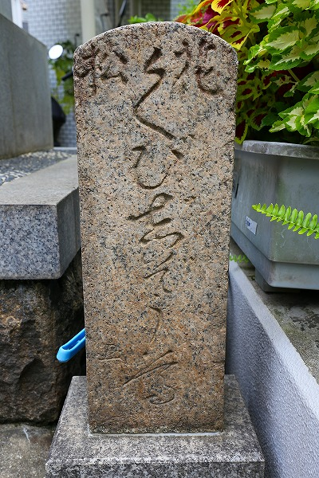
傍らには「花松 くびぢぞう尊」と書かれた石碑。
石の種類は万成石（まんなりいし）。
万成石は墓石や石碑、建築材によく使用される石だが、大正から昭和初期に爆発的に流行した石である。
神宮外苑の聖徳記念絵画館、新宿の伊勢丹本店、銀座の和光などいずれも大正から昭和初期を代表する建築の内装、外装材として使われた。
くび地蔵が建立されたのが大正6年。恐らくこの石碑も同時期に建てられたものだろう。
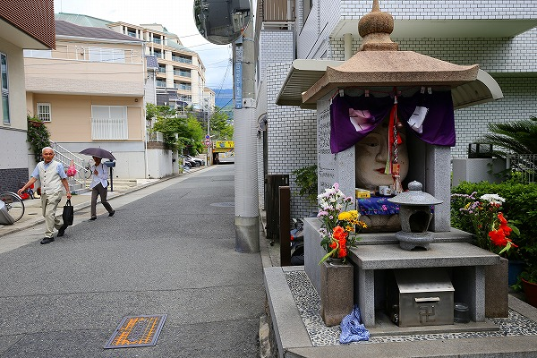
静かな住宅街にいきなりインサートされた巨大な御顔。
近所の人たちは特に気にする様子もない。
逆に「何でこんなモノを撮影してるの？」といった感じで見られたり。
そういえばこの辺りでは珍しくお地蔵さんの御顔に化粧が施されている。
化粧地蔵は京都市内や日本海側の若狭などで見られる習俗だが神戸では見たことがない（詳しくは
こちらをご覧くだされ）。
全然関係ないが、すぐ近くにはやけに低いガードがあった。
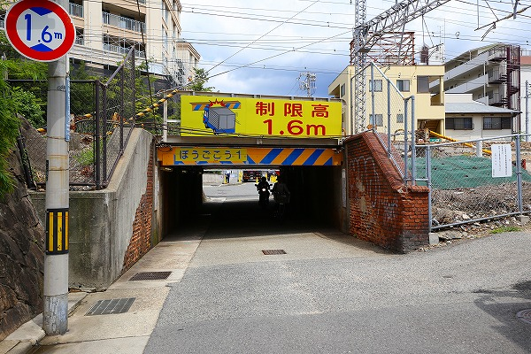
歩いている人もついつい頭を曲げてしまう低さだった。
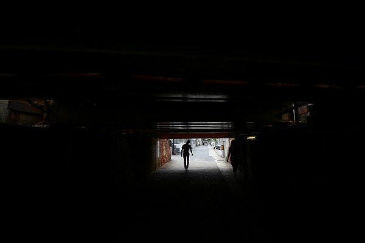
頭に御利益のあるお地蔵さんがすぐ近くにあるわりには、随分頭が不自由なガードなんですね…。
さて、これからおまけ。というかどっちかというと
こっちが本題っぽいのだが。
楽しいくび地蔵見学も終わり、ぶらぶら歩いていたらこんな場所があった。
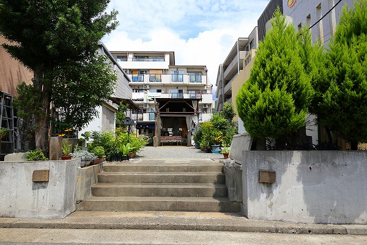
住宅街の中にふっ、とエアポケットのような場所があった。
新しいマンションが立ち並ぶ中、何か近づいてはいけないような、それでいて素通りを許さないようなオーラを放っていた。
最近鈍りがちな
珍寺センサーがピーンと反応したので迷わず見に行くことにした。

そこは100坪ほどの場所で、真ん中に足場パイプで出来た仮設の小屋のようなものが建っていた。
中にお邪魔すると、手作りのベンチや学校の椅子など
お手製っぽい雰囲気にあふれているじゃないですか。
一番奥にはこれまた手造りっぽい祭壇があり、そこに本尊らしきお像が。
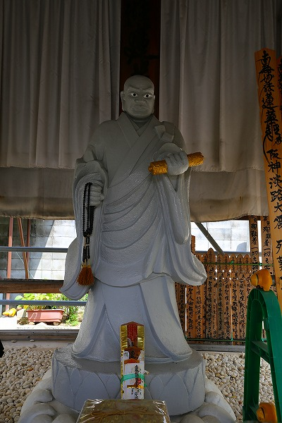
うおっ！コレは…日蓮聖人だな。眼がギョロっとしていて異様な迫力があるぞ。
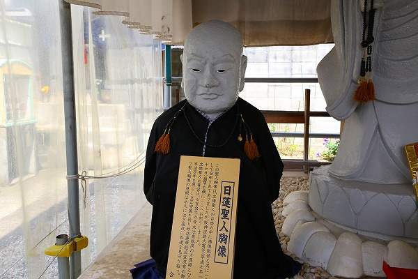
傍らにも日蓮聖人の胸像が。
説明を読むとこの場所の正体がうっすらと浮かび上がってきた。
この小さい方の日蓮聖人胸像は日蓮聖人立像、つまり真ん中に立つ日蓮さんの台座の中に収められていたお像のひとつだというのだ。
横に掛かっていた写真を見てビックリ。

何と巨大な碑が建っているではないか。
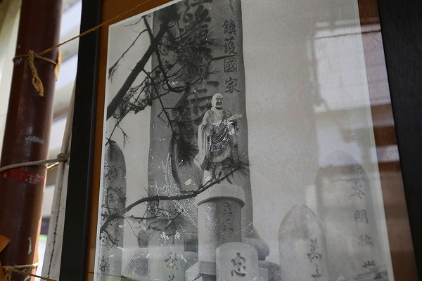
日蓮聖人の立像が2m程としてもかなり大きな碑であることが判る。
しかも周辺にもニョキニョキと砲弾型の柱が林立しているではないか！
何だコレは！
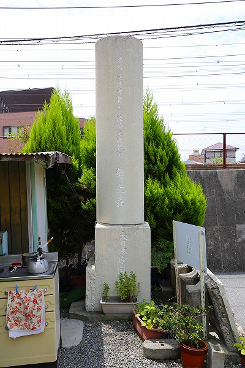
そういえば入り口に円柱のようなものがあったと思い、外に出て見直す。
正面は植え込みがあってよく見えなかったが、裏面には「命題 法隆寺貫主 佐伯定胤猊下 華光荘 大日本安國云々」 とあった。
佐伯定胤とは奈良、法隆寺の貫主（管主＝住職のこと）を明治の末から昭和25年まで40年以上務めた人物で、仏教学者でもあり、法隆寺の再建にも尽力した人物だ。
そんな仏教界のVIPが関わっているとは…一体ココは何なんだ？
柱の傍らに説明板がある。そこに詳しい説明が書かれていた。最初に読めっつー話ですね。はい。
曰く
この場所にはかつて高さ10メートルという日本一のお題目宝塔があったという。
さっきの写真にあった巨大な碑のことだろう。
建立は昭和9年。
開眼には日蓮宗総本山身延久遠寺の貫主により執り行われたという。
執行委員長は当時の陸軍中将で、賛同員にも陸海軍人の名が多数連なっており、軍部との密接な関係が伺える。
そんなお題目宝塔とその他の塔も神戸の震災によって失われてしまった。
その残ったパーツを保存しているのだ。
まあ、それはそれとして、日蓮聖人がおわす建物の脇にも見逃せない方々がいらっしゃるのでご覧ください。
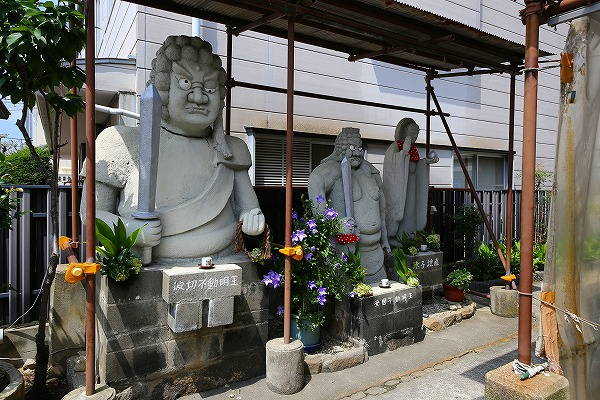
どーですか？
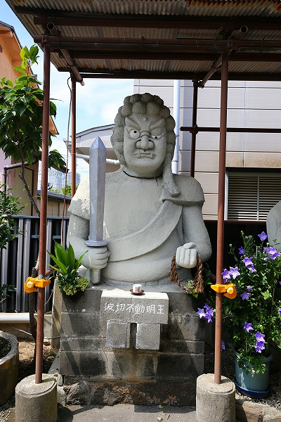
波切不動明王とある。
上半身のみなれど、中々の迫力。
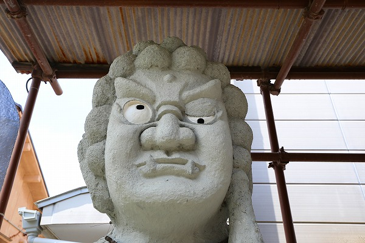
立体的な眉毛や小鼻の上の肉の食い込みなどに作者のこだわりが見られる。
作風からして先ほどの日蓮聖人の立像とは違う作者のように思える。
更にお隣には…
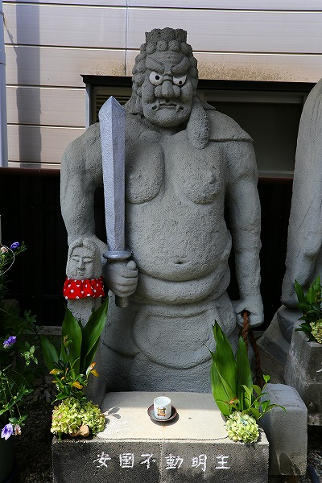
安国不動明王ですって。
全体のプロポーションとしてやや頭が小さすぎるように思えるが、立派な三段腹が際立って見える。
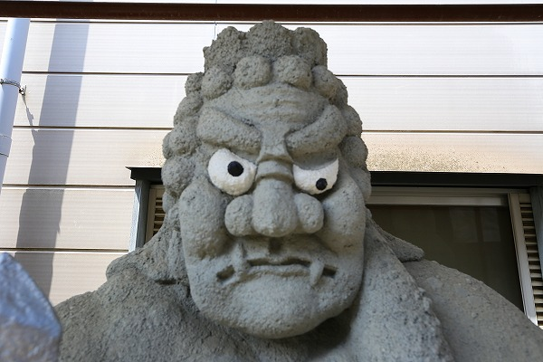
こちらも先ほどの波切不動明王像と同じ作者であろう。
さらにその隣には水子地蔵が。
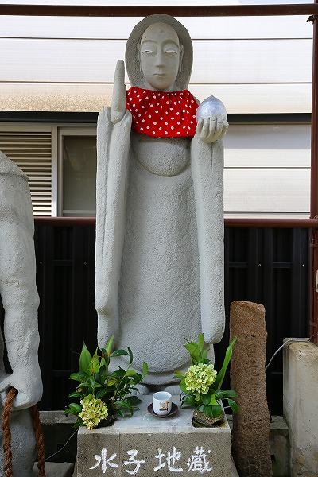
先の2体の不動様とは違い、シュッとしたイメージ。
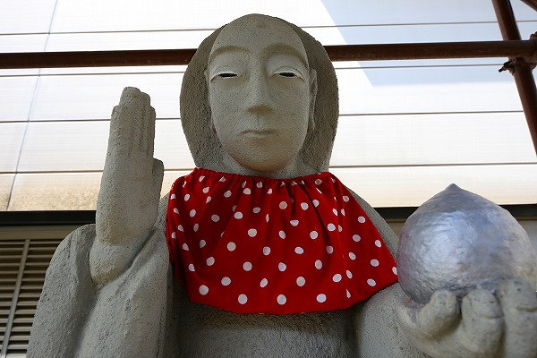
これもまた別の人が作ったのだろう。
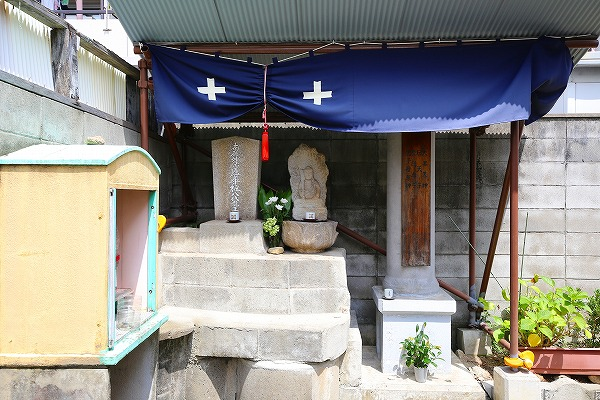
敷地の片隅には不動明王の石像が。
妙に不動明王がフィーチャーされている感じ。
不動明王といえば真言宗、というイメージが強いが、日蓮宗でも不動明王は信仰の対象になっているのでいいんですけど。
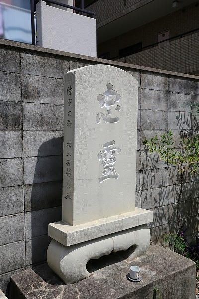
一番奥には忠靈と刻まれた碑が建っていた。
あ、コレ、先程の写真の端っこに写ってた。
↑この「忠」の字の碑ね。
この巨大なお題目が建立された昭和9年というのは日本という国の権力が軍部に移行していく過渡期である。
それは同時に宗教の主導権も次第に軍部に移行していく時期でもあるのだ。
信教の自由や表現の自由を保障されて久しい現代を生きる我々には想像もできないだろうが、
宗教というものはその時代や権力に寄り添ったり離反したりしながら生き抜いてきたのだ。
それが良いとか悪いとかいうつもりは毛頭ないが、そんな時代のうねりを感じさせる痕跡が今も残っている、しかもかなり強い意志の元に残されているのを見て、思わず感じ入ってしまった次第です。
おまけ、長かったですね、スミマセン。
不動明王はサイコーにサイコーでした！